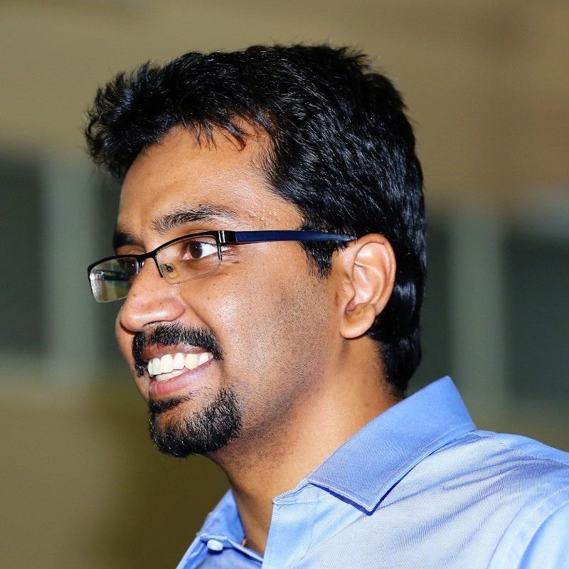

|  | Postdoctoral Fellow |
I am a Postdoctoral Fellow jointly in Applied Mathematics at the School of Engineering and Applied Sciences, Harvard University and in the Vision Group at the Department of Biology, Lund University. Previously, I was a Postdoctoral Scholar in the Department of Mechanical Engineering at UC Riverside, working with Prof. Fabio Pasqualetti. I completed my Ph.D. in the Department of Mechanical and Aerospace Engineering at UC San Diego in 2019, where my advisor was Prof. Sonia Martínez. Before that, I received the B.Tech and M.Tech degrees in Mechanical Engineering from IIT Madras in 2014.
I am interested in the design and analysis of complex and adaptive autonomous systems, with an eye towards applications in robotics. Typical concerns include: 1) Optimality and robustness of performance, 2) Guaranteed safe and secure operation, 3) Scalability of design. Consequently, my efforts are directed towards uncovering the principles of: 1) organization of internal complexity, 2) adaptation to complex environments, 3) the interplay between the above. This places my research at the intersection of optimization, control theory, machine learning and infinite-dimensional analysis.
A Multiscale Analysis of Multi-Agent Coverage Control Algorithms
V. Krishnan and S. Martínez
Learning Robust Feedback Policies from Demonstrations
A. A. R. Al Makdah, V. Krishnan and F. Pasqualetti
On Direct vs Indirect Data-driven Predictive Control
V. Krishnan and F. Pasqualetti
IEEE Conference on Decision and Control
Lipschitz Bounds and Provably Robust Training by Laplacian Smoothing
V. Krishnan, A. A. R. Al Makdah and F. Pasqualetti
NeurIPS
Data-driven Attack Detection for Linear Systems
V. Krishnan and F. Pasqualetti
IEEE Control Systems Letters (presented at the IEEE Conference on Decision and Control)
Distributed Online Optimization for Multi-Agent Optimal Transport
V. Krishnan and S. Martínez
A Probabilistic Framework for Moving Horizon Estimation: Stability and Privacy Considerations
V. Krishnan and S. Martínez
IEEE Transactions on Automatic Control
On Observability and Stability of Moving-Horizon Estimation in a Distributional Framework
V. Krishnan and S. Martínez
American Control Conference
Distributed Control for Spatial Self-Organization of Multi-Agent Swarms
V. Krishnan and S. Martínez
SIAM Journal on Control and Optimization
Distributed optimal transport for the deployment of swarms
V. Krishnan and S. Martínez
IEEE Conference on Decision and Control
Identification of critical nodes in large-scale spatial networks
V. Krishnan and S. Martínez
IEEE Transactions on Control of Network Systems
Identification of critical node clusters for consensus in large-scale spatial networks
V. Krishnan and S. Martínez
20th IFAC World Congress
Formation control and trajectory tracking of nonholonomic mobile robots
A. Saradgi, V. Muralidharan, V. Krishnan, S. Menta and A. D. Mahindrakar
IEEE Transactions on Control Systems Technology
Self-Organization in Multi-Agent Swarms via Distributed Computation of Diffeomorphisms
V. Krishnan and S. Martínez
22nd International Symposium on Mathematical Theory of Networks and Systems
Large-Scale Multi-Agent Transport: Theory, Algorithms and Analysis
V. Krishnan
Ph.D. Thesis, UC San Diego